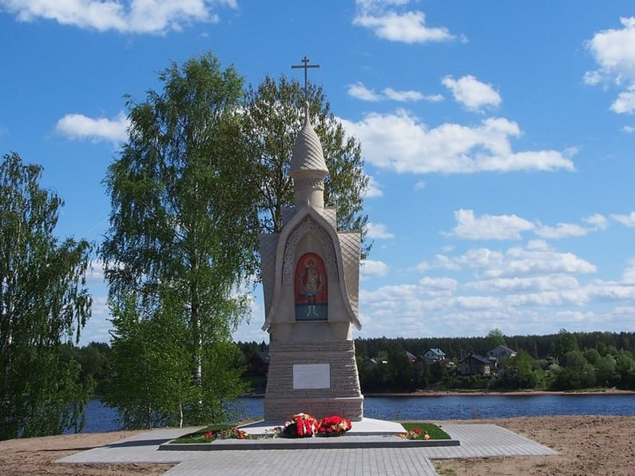
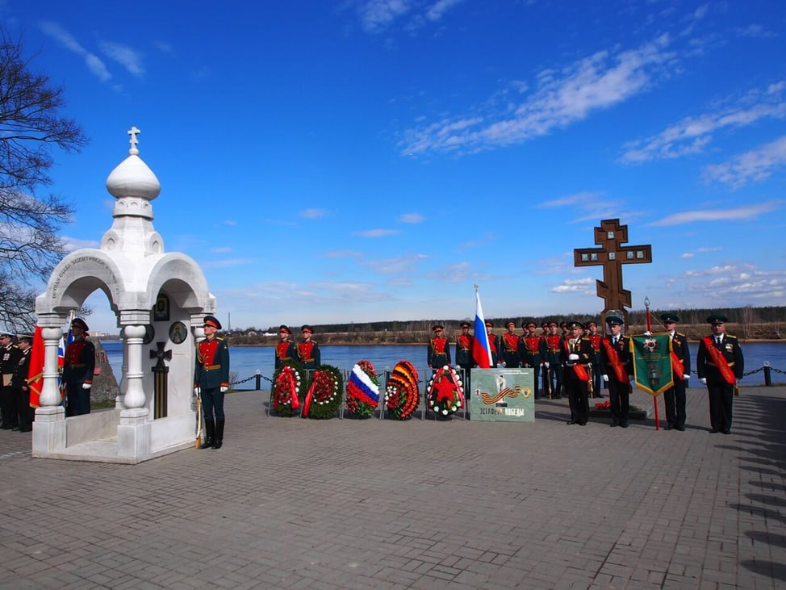

9 мая 2015 года, в 70-летний юбилей Великой Победы, состоялось торжественное открытие Часовни в честь Святого великомученика Георгия Победоносца.
Часовня в честь Святого великомученика Георгия Победоносца


Часовня стоит в той части поселка, где раньше были жилые дома. Но эта часть Дубровки еще не возродилась. На берегу Неву стоит камень, на котором написано: "Потомок, знай. Здесь с XV века была деревня Выборгская Дубровка. Уничтожена в 1942 году".